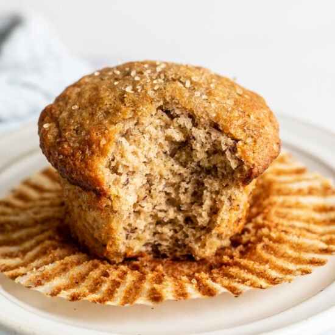

Muffin Recipe

Description
I’ve made these muffins hundreds of times because they’re easy to make, they call for simple ingredients, and they turn out perfectly every single time: crispy on the outside and soft and fluffy on the inside. Trust me, this will quickly become your favourite banana muffin recipe!
This banana muffin recipe goes over so well with kids. Not only are these banana bread muffins like cupcakes, but they’re ready, start to finish, in just half an hour!
Ingridients
- 1-1/2 cups all-purpose flour
- 1 cup sugar
- 1 teaspoon baking soda
- 1/2 teaspoon salt
- 3 medium ripe bananas
- 1 large egg, room temperature
- 1/3 cup vegetable oil
- 1 teaspoon vanilla extract
Steps
- In a large bowl, combine dry ingredients. In another bowl, mash the bananas. Add egg, oil and vanilla; mix well. Stir into the dry ingredients just until moistened. Fill greased or paper-lined muffin cups half full.
- Bake at 375° for 18-22 minutes or until a toothpick inserted in the center comes out clean. Cool for 10 minutes; remove from pan to a wire rack to cool completely.